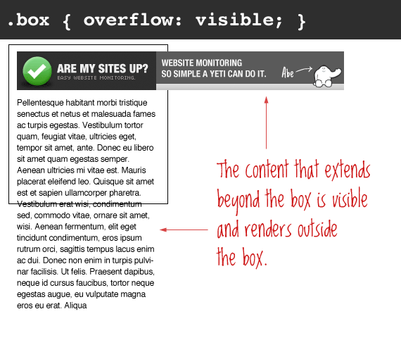

| color |
Define el color del texto. |
red, blue, #ff0000, rgb(255, 0, 0) |
p { color: red; } |
 |
MDN |
| Font-Size |
Especifica la dimensión de la letra. Este tamaño puede, a su vez, alterar el aspecto de alguna otra cosa, ya que se usa para calcular la longitud de las unidades em y ex.. |
( xx-small, x-small, small, medium, large, x-large, xx-large) |
p { font-size: 18px; } |
 |
MDN |
| border-radius |
La propiedad border-radius CSS redondea las esquinas del borde exterior de un elemento. Puedes establecer un único radio para crear esquinas circulares o dos radios para crear esquinas elípticas. |
Length, percentage |
p { border-radius: 10px 5%; } |
 |
MDN |
| Display |
La propiedad CSS display especifica si un elemento es tratado como block or inline element y el diseño usado por sus hijos, como flow layout(Diseño de Flujo), grid(Cuadricula) o flex(Flexible).. |
block,inline,run-in,flow,flow-root,table,flex,grid,ruby |
p { display: block; } |
|
MDN |
| flexbox |
Es un método que pueda ayudar a distribuir el espacio entre los elementos de una interfaz y mejorar las capacidades de alineación. Este artículo hace un repaso de las principales características de flexbox, las que exploraremos con mayor detalle en el resto de estas guías. |
row,row-reverse,column,column-reverse |
.box {display: flex; } |
 |
MDN |
| position |
La propiedad position de CSS especifica cómo un elemento es posicionado en el documento. Las propiedades top, right, bottom, y left determinan la ubicación final de los elementos posicionados. |
static,relative,absolute,sticky |
#two {position:relative; } |
 |
MDN |
| box-shadow |
La propiedad CSS box-shadow añade efectos de sombra alrededor del marco de un elemento. Se pueden definir múltiples efectos separados por comas. La caja de la sombra se describe por los desplazamientos en X e Y, los radios de desenfoque y dispersión, y el color relativos al elemento. |
Length,offset-x,offset-y,blur-radius,spread-radius |
p { box-shadow: 60px -16px teal; } |
|
MDN |
| Overflow |
La propiedad CSS overflow especifica: si recortar contenido, dibujar barras de desplazamiento o mostrar el contenido excedente en un elemento a nivel de bloque. |
overflow-x,overflow-y,hiden,visible,scroll,auto |
p { overflow: visible; } |
 |
MDN |
| Z-index |
La propiedad CSS z-index indica el orden de un elemento posicionado y sus descendientes. Cuando varios elementos se superponen, los elementos con mayor valor z-index cubren aquellos con menor valor. |
auto, integer |
p { z-index: 1;} |
|
MDN |
| Opacity |
La propiedad CSS opacity define la transparencia de un elemento, esto es, en qué grado se superpone el fondo al elemento. |
alphavalue |
hbox.example { opacity: 0.5;} |
|
MDN |
| Padding |
La propiedad abreviada de CSS padding establece el área de relleno en los cuatro lados de un elemento a la vez. |
padding-top, padding-right, padding-bottom, padding-left |
padding: 5% 10%; |
|
MDN |
| Margin |
La propiedad CSS margin establece el margen para los cuatro lados. Es una abreviación para evitar tener que establecer cada lado por separado con las otras propiedades de margen: margin-top, margin-right, margin-bottom y margin-left. |
margin-bottom, margin-left, margin-right, margin-top |
margin: 5% auto; |
|
MDN |
| direccion |
La propiedad direction se utiliza para indicar en que dirección fluye el texto: rtl para hebreo o árabe y ltr para otros tipos de escritura. Esto tendría que especificarse como parte del documento (por ejemplo, usando el código dir en HTML) en lugar que directamente en la hoja de estilo CSS. |
ltr, rtl |
blockquote { direccion: rtl; } |
|
MDN |
| lang |
La pseudo-clase :lang() de CSS es utilizada para modificar elementos en función del idioma en el que se determina que están. |
string |
p:lang(en) {quotes: "\201C" "\201D" "\2018" "\2019"; } |
|
MDN |